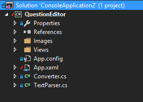
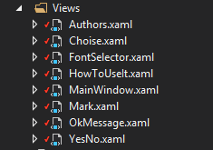
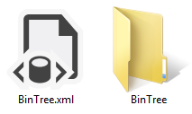
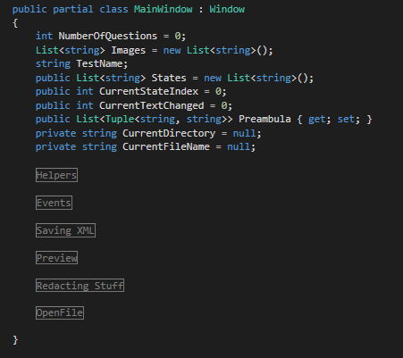

Проект спроектирован как дополнение к системе тестирования. Назначение его состоит в конвертации старых тестов из формата .qtf в
более новый и многофункциональный формат .xml. Проект состоит из следующих основных састей:
*Конвертера тестов из старого формата в новый
*Редактора тестов
Каждый из этих подпроектов независим друг от друга, но вместе дает полную функциональность для работы с системой тестирования. Далее подробнее
остановимся на каждой из этих компонентов.
2. Структура проекта

На данном этапе разработки проект имеет следующую структуру:
*Класс Converter представляет собой класс, реализующий конвертацию тестов из старого формата в новый
*Папка Views содержит в себе все представления нашего проекта и методов обработки данных

*Папка Images содержит изображения, необходимые для представлений
3. Общий принцип работы
Чтобы однозначно и правильно понять, как работает приложение - прочтите данный пункт внимательно, ибо это очень важно.
При запуске приложения запускается главное представление MainWindow, которое содержит в себе основное меню и поле
редактирования тестов. Конвертация тестов из старого формата в новый предоставлена кнопкой Конвертирование, остальная
же функциональность исключительно для редактирования тестов.
*При создании нового теста очищаются все данные на форме, такие как список вопросов, преамбула и другие компоненты. В
таком случае вы создаете тест с нуля. При сохранении такого теста вам будет предоставлена возможность выбрать, куда
сохранить тест.
*При открытии существующего теста на форму загрузятся все нужные данные, и с ним можно работать точно так же, как и с
созданным.
*При открытии сконвертированного теста могут возникнуть проблемы с картинками. Например

В противном случае каждая не найденная картинка будет сопровождаться предупреждающим окном о отсутствии картинки при
конвертировании и не будет отображаться в препросмотре.
Далее немного о препросмотре. При нажатии элемента меню "препросмотр" создается временный .html файл, который
демонстрирует, как выглядит наш тест. В это время картинки копируются в временную папку. Это вспомогательная
возможность позволяет посмотреть, как выглядит наш тест и проверить, все ли отображается верно (картинки, поля ввода...)
Не забывая вышеперечисленные принципы уже можно понять суть работы приложения и вносить в него изменения. Далее будет разобрана
каждая деталь по-отдельности.
4. Конвертер тестов
Простыми словами конвертер тестов имеет один важный публичный метод Dowork(string input, string output), который считывает
файл input, преобразовывает его и возвращает файл output. Принцип его работы таков: считывается файл, разбивается на вопросы, далее
каждый вопрос преобразовывается в XML код, после чего все полученное "складывается воедино" и получаем готовый тест в новом виде.
Подробнее о каждом методе:
void DoWork(string, string) разбивает тест на кусочки (вопросы), после чего к каждому вопросу применяется XElement ParseString(string str)
, который каждый вопрос преобразовывает в новый формат по отдельности, разбивая его на еще более мелкие частички. В результате получаем
готовый XML код.
Основным функционалом редактора тестов являются методы класса MainWindow.xaml.cs. Их условно можно разделить на следующие категории:

Helpers - вспомогательные методы
Events - основные события взаимодействия с UI
Saving XML - методы для сохранения теста
OpenFile - методы для открытия тестов
Redacting Stuff - методы редактирования текста теста
Preview - методы для препросмотра теста
Каждую отдельную категорию рассмотрим отдельно позже. Для начала нужно разобрать, какое представление для чего предназначено
5.1. Представления
Рассмотрим, какое представление для чего нам нужно.
Authors - страница с авторами проекта
Choice - страница вставки элемента "выбор" в вопрос
FontSelector - страница выбора текста для выделенной области
HowToUseIt - страница справки по проекту
MainWindiw - главная страница с почти всем функционалом
Mark - страница редактирования пометки к тесту
OkMessage - сообщение ОК
YesNo - окошко выбора Да/Нет
Каждая страница несет свою функциональность в проект, но основой является страница MainPage.xaml. Ее мы и рассмотри далее
5.2. Методы
Ранее вы видели условное деление методов страницы MainPage на категории. Сейчас рассмотрим их по-отдельности.
Helpers - вспомогательные методы. В них входят LoadPreambula() - генерирует начальные параметры для преамбулы теста (дату создания
, название...), UpdateRemarks() - обновляет текущие пометки преамбулы на форме и другие не значительные методы.
Events - методы событий взаимодействия с UI. Сюда входят методы типа "развернуть на весь экран", "свернуть список вопросов", и т.д. Особой
значимости они не несут, поэтому описывать их нет смысла.
Saving XML - одна из важнейших групп методов. Опишем некоторые важнейшие методы: QuestionToElement(Question q) - метод, преобразовывающий Question в XElement для возможности
сохранить его в файл. WriteImages() - записывает изображения из директории, откуда они взяты в директорию с тестом TextToString()/ChoiseToString()/InputToString()... - вспомогательные методы для преобразования элемента "текст", "выбор", "ввод"
в строку
и другие методы
Preview - методы для генерации html документа для препросмотра теста. Основной метод XmlToHtml(string src) преобразовывает XML,
сгенерированный предыдущей группой методов в html и запускает браузер для препросмотра результата. Особых нюансов нет, поэтому
все должно быть хорошо.
Redacting Stuff - методы редактирования текста вопроса. (для добавления жирного шрифта, цвета, стиля текста). Каждый метод отвечает
за маленькую часть, поэтому проблем в них понимании не должно быть.
Open File - методы для загрузки данных из файла (открытия теста). Основной метод LoadQuestions() загружает даннные на главную форму.
Другой метод XmlToQuestion() он типа как QuestionToText() только имеет обратное назначение. Остальные методы являются мелкими и не стоят
отдельного описания.
6. Внесение изменений
Для внесения изменений в проект нужна будет среда разработки Visual Studio 2015 или выше. Программа подлежит расширению и добавлению
новой функциональности. Приятной разработки :)